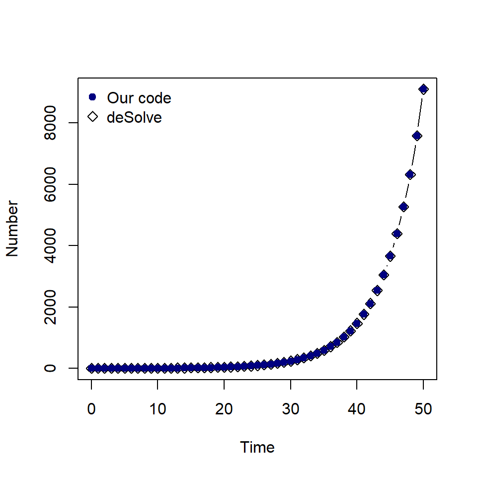
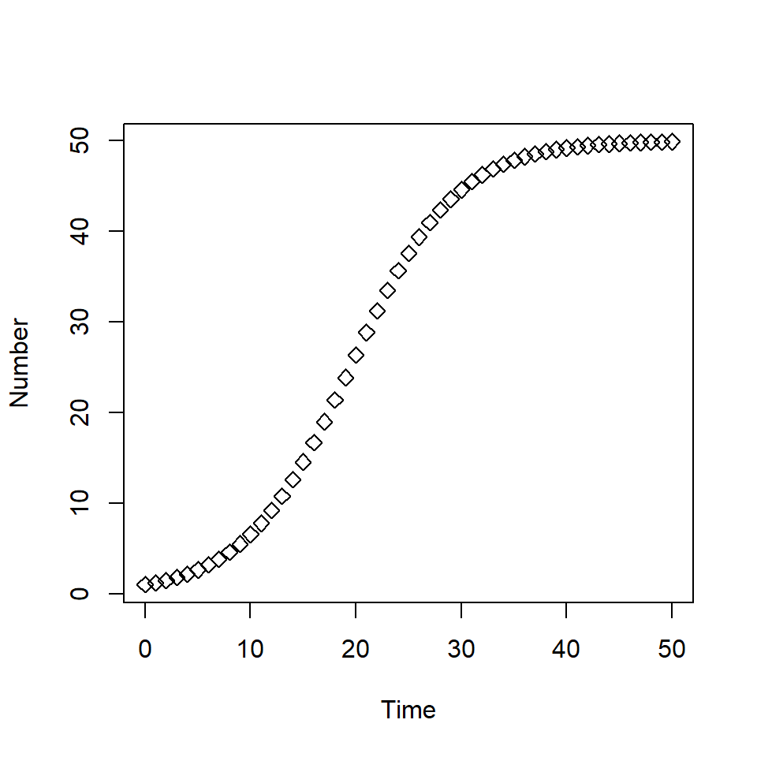

install.packages("deSolve")
library(deSolve)Numerical integration : Using deSolve
Using deSolve
In this lesson we will learn how to use an ODE solver in the R package deSolve to find numerical approximations of solutions to ODEs. The first step is to install and load the package.
The function we will use to find our numerical solution is called ode. There are a number of inputs to this function, we will need to specify the first five:
ode(y, times, func, parms, method).
Let’s look at these inputs in detail for the population growth ODE \(\frac{dP}{dt} = r P\).
The first input is the initial state value for our ODE. Here we will assume that the initial population size is 1.
We will put this values into a vector called state_var as follows:
state_var <- c(P = 1).
The second input is the times over which we want to find our numerical solution for. Assuming our parameter values are daily rates, we will create a sequence of values starting from day 0 to day 50 at increments of one day. Our time vector is: times <- seq(from = 0, to = 50, by = 1)
The third input is func, an R function which describes the system of ODEs. The function itself has to be specified with three inputs:
- the current time
- the current value of the state variable
- the vector of parameters
and the function must return a list, where the first element is a vector of the derivative values.
The function below describes the system of ODEs for the predator-prey model. It takes inputs time, state_var and pars and returns our derivative values dP in a vector.
population_growth <- function(time, state_var, pars) {
# Extract state variables
P <- state_var["P"]
# Extract model parameters
r <- pars["r"]
# The differential equations
dP <- r * P
# Return the derivative as a list
sol <- list(c(dP))
return(sol)
}The fourth input is the vector of parameter values. In the population growth model, we have just one parameter, we add these to a vector named pars : pars <- c(r = 0.2).
The fifth input is the method to be used to find the numerical solution. We will specify our method as euler.
# What are our parameter values?
pars <- c(r = 0.2)
# Define time to solve equations
times <- seq(from = 0, to = 50, by = 1)
# What are the initial values (or conditions) of the state variables?
state_var <- c(P = 1)
# Solve the equations over the vector of times with initial conditions
solution_desolve <- ode(y = state_var, times = times, func = population_growth,
parms = pars, method = euler)
# Convert to a data frame to extract columns by name
solution_desolve <- as.data.frame(solution_desolve)
head(solution_desolve) time P
1 0 1.00000
2 1 1.20000
3 2 1.44000
4 3 1.72800
5 4 2.07360
6 5 2.48832The solution consists of the time and the solution of our ODE at that time point.
Let’s compare our results from the R function ode to our Euler solver from the previous lesson:
# Assign parameter values
P_0 <- 1
r <- 0.2
# Calculate the number of time steps
delta_t <- 1
t_max <- 50
n_max <- t_max / delta_t
# Set up empty data frame to store time and value of P
solution <- data.frame(time = 0, P = P_0)
# for n_max time steps
for (n in 1:n_max){
# Find the current time
time <- solution$time[n]
# Find the current value of P
P <- solution$P[n]
# Calculate the next value of P
next_P <- P + (r * P) * delta_t
# Store the time and the next value of P
solution[(n + 1), ] <- c(time + delta_t, next_P)
}
plot(solution_desolve$time, solution_desolve$P, type = "b", pch = 5,
xlab = "Time", ylab = "Number")
points(solution$time, solution$P, pch = 19, col = "navy")
legend("topleft", c("Our code", "deSolve"), col = c("navy", "black"),
pch = c(19, 5), bty = "n")
As expected, the values are the same.
As before, we can decrease our time step to improve the accuracy of our numerical solution. To do this, we must change the by argument in our times vector.
times_01 <- seq(from = 0, to = 50, by = 0.1)
solution_01 <- as.data.frame(ode(y = state_var, times = times_01,
func = population_growth, parms = pars,
method = euler))To use the RK4 method, we simply change the method argument in ode to rk4.
times <- seq(from = 0, to = 50, by = 1)
solution_rk4 <- as.data.frame(ode(y = state_var, times = times,
func = population_growth, parms = pars,
method = rk4))
Exercise
Using the population growth ODE function from the previous lesson, extend the code to find the solution of the population growth model with carrying capacity with \(r=0.2\), \(K=50\) and \(P(0)=1\). Recall that the ODE is,
\[ \begin{aligned} \frac{dP}{dt} & = r P \frac{(K-P)}{K} \end{aligned} \] where \(r\) is the growth rate and \(K\) is the carrying capacity.
Use the function ode to find the solution and plot the solution.
Solution
To extend the population growth function make the following changes,
- extract the parameter \(K\)
- add the carrying capacity terms to the line
dP.
population_growth_K <- function(time, state_var, pars) {
# Extract state variables
P <- state_var["P"]
# Extract model parameters
r <- pars["r"]
K <- pars["K"]
# The differential equations
dP <- r * P * ((K - P) / K)
# Return the solved equations as a list
sol <- list(c(dP))
return(sol)
}To find the solution, we must add \(K = 50\) to our parameter vector.
# What are our parameter values?
pars <- c(r = 0.2, K = 50)
# Define time to solve equations
times <- seq(from = 0, to = 50, by = 1)
# What are the initial values (or conditions) of the state variables?
state_var <- c(P = 1)
# Solve the equations over the vector of times with initial conditions
solution <- as.data.frame(ode(y = state_var, times = times,
func = population_growth_K, parms = pars,
method = rk4))
plot(solution$time, solution$P, type = "b", pch = 5,
xlab = "Time", ylab = "Number")
Note : We convert the output from ode() to a data frame so we can extract column names for plotting.